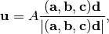
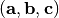
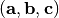

Output files¶
The output data are stored in the following files on the current directory.
List of files¶
band.yaml¶
Sets of phonon frequencies on band paths calculated by the
band-structure mode
(e.g. BAND tag) are stored in the YAML format.
band.yaml is viewed using the tool bandplot
(bandplot). bandplot can convert the data in the YAML
format to that in the gnuplot-style format using the --gnuplot option.
mesh.yaml¶
A set of frequencies on irreducible q-points of a q-point mesh by the
mesh-sampling mode (MP tag) is stored in
the YAML format.
qpoints.yaml¶
A set of frequencies calculated by the
q-points mode
(QPOINTS tag) is stored in the YAML format.
thermal_properties.yaml¶
Thermal properties calculated are stored in the YAML format.
The auxiliary tool propplot (propplot) can be used to
plot the content of thermal_properties.yaml.
thermal_displacements.yaml¶
Mean square displcements of atoms are stored in the YAML format. Without projecting eigenvectors along a specific direction, the results projected along Cartesianl coordinates, therefore three values for each atom at a temperature, are written into the file.
thermal_displacement_matrices.yaml¶
Mean square displacement matricies of atoms are stored in the YAML format. Since the matrix for each atom at a temperature is symmetric, only six elements of it, xx, yy, zz, yz, xz, xy, are written in this order.
total_dos.dat and partial_dos.dat¶
Total DOS and partial dos are stored in the simple format, respectively.
total_dos.dat and partial_dos.dat are viewed using the
auxiliary tool pdosplot (pdosplot).
File format of partial_dos.dat¶
The first column is the phonon frequency. The following colums are the
projected density of states for atoms in the primitive cell. In the
NaCl example, there are two atoms in the
primitive cell, which are one Na and one Cl atoms. The order of atoms
in the primitive cell is confirmed running phonopy with the -v
option. The partial_dos.dat of this example is starting with the
following lines:
# Sigma = 0.063253
-0.6695362607 0.0000000000 0.0000000000
-0.6379098952 0.0000000000 0.0000000000
-0.6062835296 0.0000000000 0.0000000000
-0.5746571641 0.0000000000 0.0000000000
-0.5430307986 0.0000000000 0.0000000000
-0.5114044331 0.0000000000 0.0000000000
-0.4797780675 0.0000000000 0.0000000000
-0.4481517020 0.0000000000 0.0000000000
-0.4165253365 0.0000000000 0.0000000000
-0.3848989710 0.0000000000 0.0000000000
-0.3532726054 0.0000000004 0.0000000006
-0.3216462399 0.0000000044 0.0000000066
-0.2900198744 0.0000000370 0.0000000551
-0.2583935089 0.0000002410 0.0000003596
-0.2267671433 0.0000012239 0.0000018260
...
where from the left to right in each line, frequency, PDOS of Na and PDOS of Cl. The first line is just a comment to remember the sigma value used.
With XYZ_PROJECTION tag specified, the format changes to represent x, y, and z components:
# Sigma = 0.063253
-0.6695362607 0.0000000000 0.0000000000 0.0000000000 0.0000000000 0.0000000000 0.0000000000
-0.6315846221 0.0000000000 0.0000000000 0.0000000000 0.0000000000 0.0000000000 0.0000000000
-0.5936329834 0.0000000000 0.0000000000 0.0000000000 0.0000000000 0.0000000000 0.0000000000
-0.5556813448 0.0000000000 0.0000000000 0.0000000000 0.0000000000 0.0000000000 0.0000000000
-0.5177297062 0.0000000000 0.0000000000 0.0000000000 0.0000000000 0.0000000000 0.0000000000
-0.4797780675 0.0000000000 0.0000000000 0.0000000000 0.0000000000 0.0000000000 0.0000000000
-0.4418264289 0.0000000000 0.0000000000 0.0000000000 0.0000000000 0.0000000000 0.0000000000
-0.4038747903 0.0000000000 0.0000000000 0.0000000000 0.0000000000 0.0000000000 0.0000000000
-0.3659231516 0.0000000000 0.0000000000 0.0000000000 0.0000000001 0.0000000001 0.0000000001
-0.3279715130 0.0000000009 0.0000000009 0.0000000009 0.0000000014 0.0000000014 0.0000000014
-0.2900198744 0.0000000123 0.0000000123 0.0000000123 0.0000000184 0.0000000184 0.0000000184
...
disp.yaml¶
This file contains information to create supercells with displacements. The format is hopefully understood just looking into it. ‘displacement’ is written in Cartesian coordinates. The displacement and direction are related by

where  is the displacement in Cartesian coordinates,
is the displacement in Cartesian coordinates,
 is the amplitude,  is the matrix representing supercell lattice vectors
(three column vectors), and is the direction along
the supercell axes.
is the amplitude,  is the matrix representing supercell lattice vectors
(three column vectors), and is the direction along
the supercell axes.
phonopy.yaml and phonon_disp.yaml¶
Phonopy configurations and crystal structures are stored to remember what a user executed.
.hdf5 files¶
See –hdf5.
How to read phonopy YAML files¶
Most phonopy results are written in the YAML format. YAML files are easily translated to the combination of lists and dictionaries in the python case. For each computer language, e.g., Ruby, each YAML parser is prepared and you can use those libraries to parse YAML files and analyze the data easily in conjunction with your favorite language. See http://www.yaml.org/. The basic of the YAML format is found easily on the web.
mesh.yaml, band.yaml, qpoints.yaml¶
General¶
| nqpoint | Number of q-points calculated. |
| natom | Number of atoms in the primitive cell. |
| phonon | Key name of list for q-points. |
| q-position | Position of q-vector in reduced coordinates. |
| band | Key name of list for bands. |
| frequency | Phonon frequency in a specified unit at each band |
| eigenvector | Eigenvector at each band. Each eigenvector of dynamical matrix is shown as sets of three complex values of each atom along the Cartesian axes in the primitive cell. The real and imaginary values correspond to the left and right, respectively. A set of eigenvectors comprising all bands at a q-point forms a unitary matrix obtained as the result of numpy.linalg.eigh, i.e., LAPACK of routine _heevd. Therefore eigenvectors correspond to the column vectors of the unitary matrix. |
Mesh sampling mode¶
| mesh | Numbers of mesh sampling points along axes of the primitive cell. |
| weight | In the mesh sampling mode, only phonons at irreducible q-points are calculated in the default behavior. This value means the multiplicity of a q-point in the reciprocal space of the primitive cell. |
Band structure mode¶
| distance | In the band structure mode, this value means the distance from the origin in the reciprocal space of the primitive cell. The unit is the reciprocal of length unit used in the real space. |
thermal_properties.yaml¶
The physical units of the thermal properties are given in the unit section of this YAML file. However the physical units are only correct when phonopy ran with proper physical units. See Thermal properties related tags.